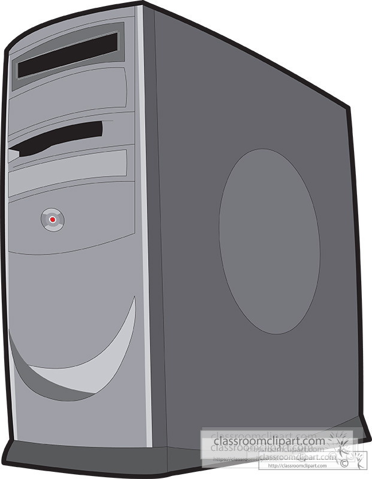

Oakland University, Rochester, MI
Expected Graduation: May 20XX
Nicholas Perron
(248) ***-**** | nperron@example.com |
Website
School of Engineering and Computer Science
Oakland University
Rochester, MI 48309
CAREER FOCUS: Undetermined Computer Science
Currently focused on getting general classes done as I decide on the exact path that I would like to follow going forwards. Highly adaptable in switching and learning programming languages, problem solving focused/solution oriented, experience in managing workflow of small teams. Seeking a Summer 2026 internship to hone my programming skills and to gain job experience.
Education
Major in Computer Science-GPA: 3.8/4.0Oakland University, Rochester, MI
Expected Graduation: May 20XX
Computer Science Course Projects:
- - Various sorting algorithms, including mergeSort
- - 2 player turn based strategy game (see past projects)
- - Calculator for matrix multiplication for matricies with arbitrary sizes
Technical Skills:
- Programming Languages: Java, C, HTML/CSS
- Design Skills: Responsive Design, Accessibility (WCAG), UX Wireframing.
- Software & Tools: Git/GitHub, VS Code, PH Code
- Operating Systems: Windows, Linux terminal